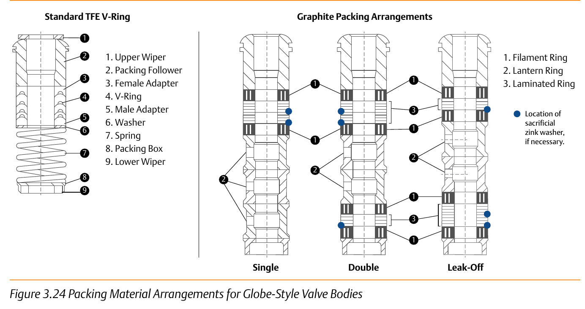

Packing Arrangements — Single, Double, Leak-Off

- Single — one packing set, the baseline arrangement.
- Double — two packing sets stacked around a lantern ring, adding a tap point between them.
- Leak-Off — a double arrangement with that tap piped away to a safe collection point instead of left open to atmosphere.
After Control Valve Handbook, 6th ed., Fig. 3.24 (printed p. 68) — used directly, both panels' own printed callouts retained as printed. Component Index: cvh-cmp-packing-material-arrangements-globe.